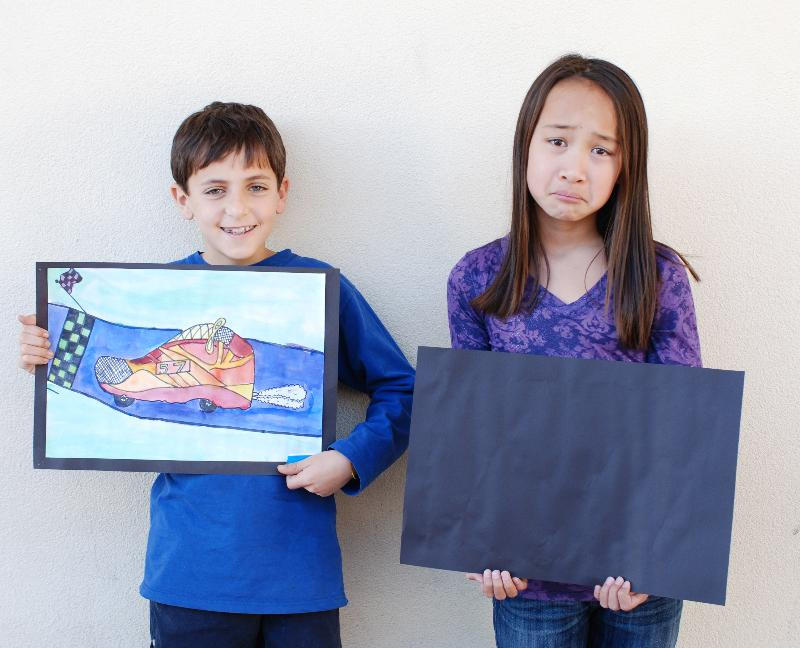
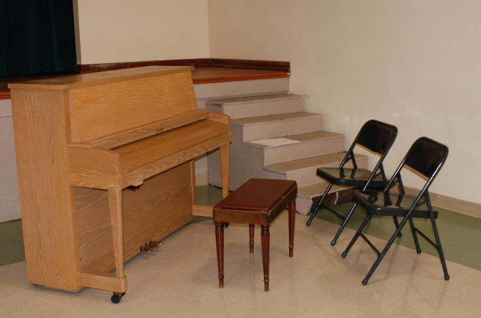
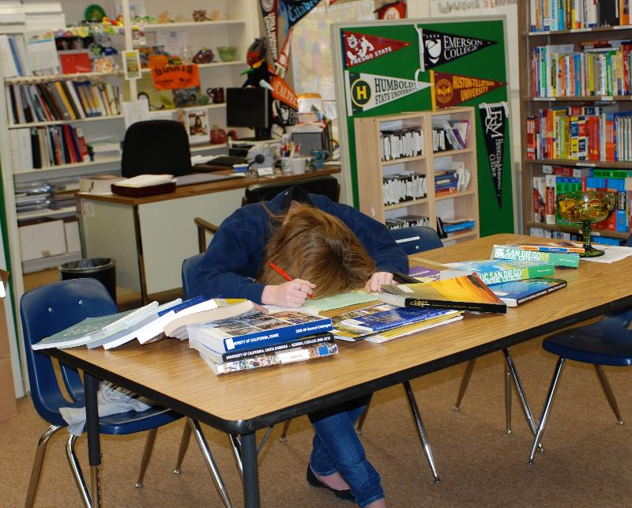

"How
dull!," exclaimed Wendy Parry, Spectra Art instructor at Juana Briones
Elementary, when asked to envision a world without PiE. "Art is more than pretty pictures. Art is a way for children to perceive and interpret their world." Parry
has taught art at PAUSD for 18 years and continually strives to tie her
projects to the curriculum in order to reinforce learning. "We experiment with shapes to reinforce math. We build on what they are learning in history. Children need art."

Kids With and Without Spectra Art
This year, PiE dollars paid for nearly 100% of the art program in district elementary schools (Spectra Art). Without this funding, the Spectra Art program is in danger of being eliminated. Superintendent Kevin Skelly anticipates continued budget challenges in the next few years. "We've
got growing class sizes and a state budget challenge that can't help
but lap up against our shores... there is a big need for folks to
contribute to PiE." Without PiE dollars, classroom
aide time would be substantially reduced as well, limiting the
opportunity to give children more individualized instruction and
differentiation experiences, according to Skelly.
At
the middle schools, a world without PiE would mean less time for
teachers to learn how to integrate new technology into their classrooms,
fewer counselors, and fewer choices in electives. "And that's where kids find and develop their passions," Skelly notes. "These programs are a major part of how we really enrich the school experience of our kids. PiE
has continually stepped up and gotten smarter and wiser about targeting
its resources to protect these critical programs and staff." Jordan
Middle School Chorus teacher Sarah Cane agrees, "Not only do my
students enjoy singing and mastering new skills, studies have shown a
direct correlation between music education and academic performance
overall."

Middle School Music Missing Accompanist
Without PiE, the high school career and counseling staff would most likely shrink. Skelly
notes that the district "knows how deeply our community values
counselors who can support our students and help them find the right
place for their post-secondary education." Overall, Skelly is very concerned about the uncertain funding picture at the state level. "As a district, we've tried to be fiscally responsible so that we're prepared for when things get bad. Having PiE's resources allows us to have a little bit of a cushion for when hard times come."

Planning for College without Career Center Help
PiE's 2010-11 Schools Campaign ends on January 28th and we are very close to reaching our $3 million+ fundraising goal. We
need your help to meet our final challenge grant, a $50,000
Participation Challenge if we receive donations from 200+ families who
have not yet given to PiE. Please pass the word to your friends and school communities. Your
contributions enable PiE to continue to protect the quality programs
and staff that make our schools such excellent places to learn. Your dollars make the difference for our kids!